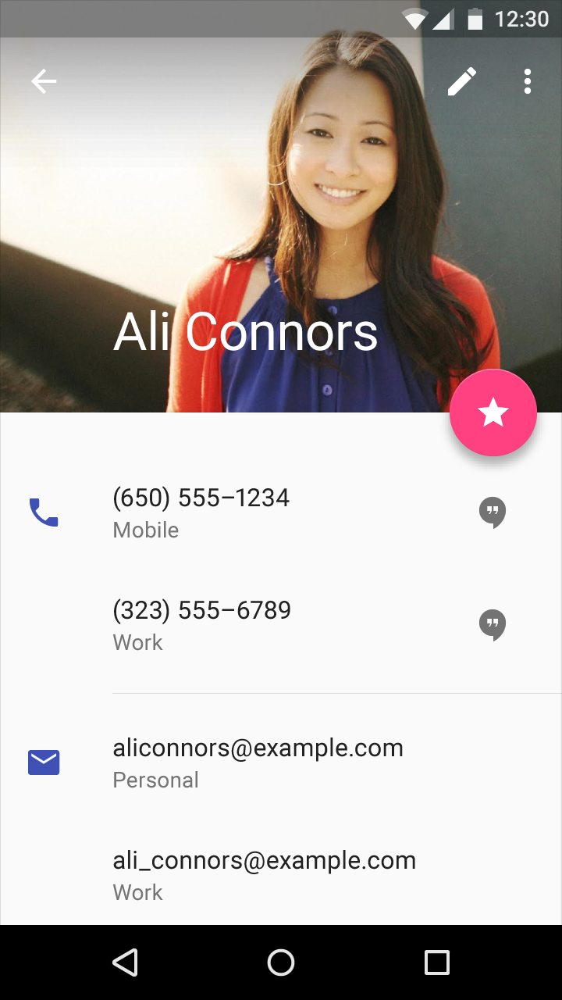
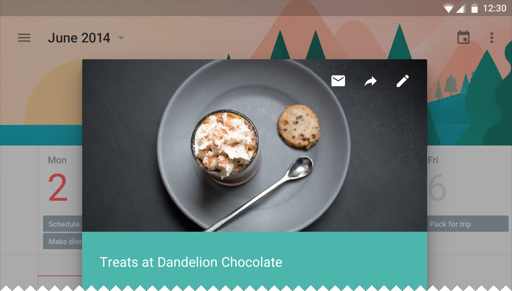
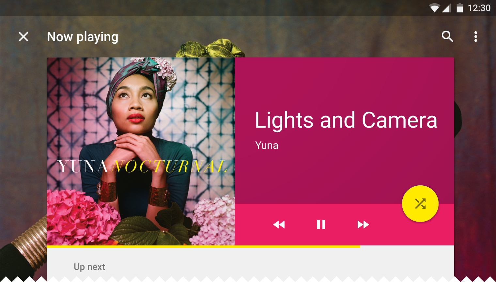

사용자 환경(UX)를 향상시키기 위해 삽화(Illustration)와 사진을 사용할 때, 개인적 연관성, 정보, 그리고 즐거움을 표현하는 이미지를 선택하십시오.

개인적 연관성
이미지는 상황과 사용자가 사는 세계를 반영할 수 있습니다.
정보
이미지는 즉각적이며 쉽게 이해 가능하게 만드는 특정한 정보를 전달할 수 있습니다.
즐거움
심미적 아름다움으로 상황을 묘사하는 것은 당신의 제품을 고유하게 만들고 사용자에게 즐거움을 가져다 줄 수 있습니다.
상황을 인식하십시오
반드시 동적이고 상황과 관련된 이미지를 사용하십시오. 사용자 경험을 상당히 향상시키는 예측 가능한 시각 자료들을 사용하십시오.

상황과 관련된 이미지를 사용하십시오
몰입감을 갖게 하십시오
필요한 경우, 색과 내용물로 덮는 것을 통해서 통합된 주인공과 썸네일을 가리거나 내비치는 것이 허용됩니다.

배경 이미지는 전경 내용물과 맞물려질 때 가려질 수 있습니다.